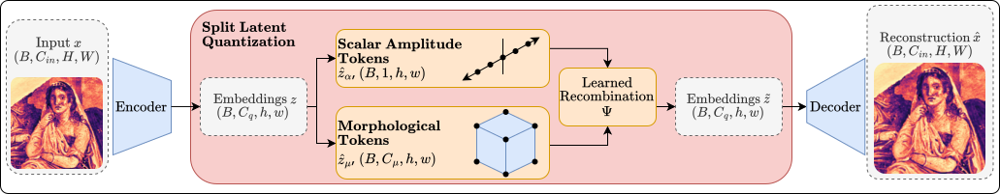
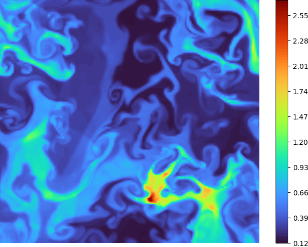
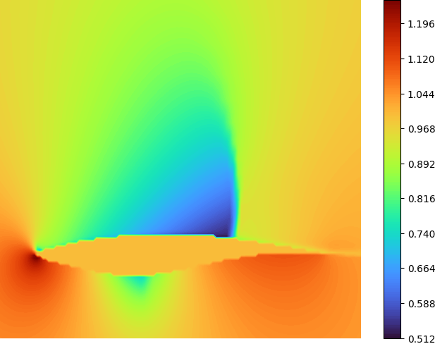
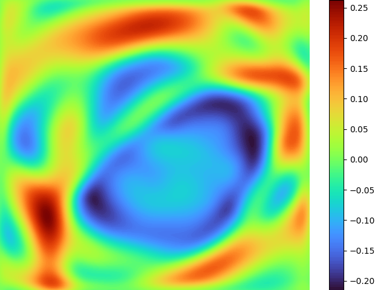
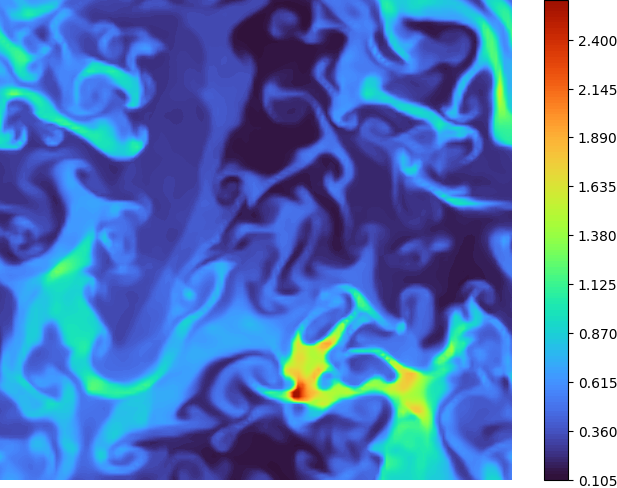
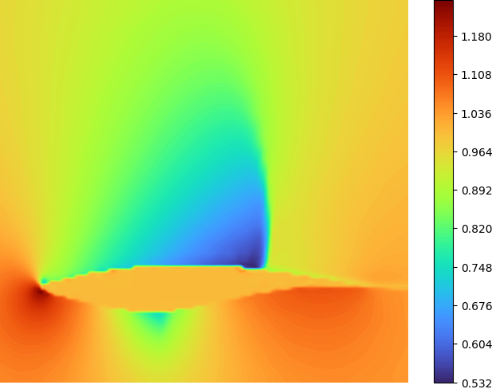
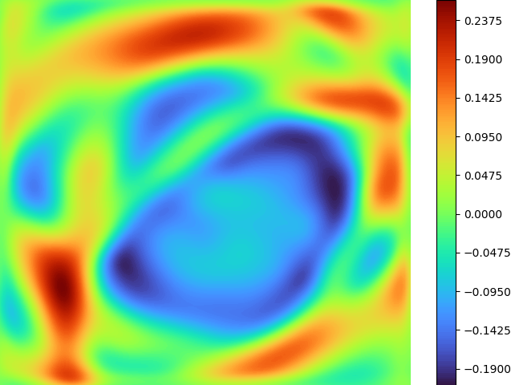
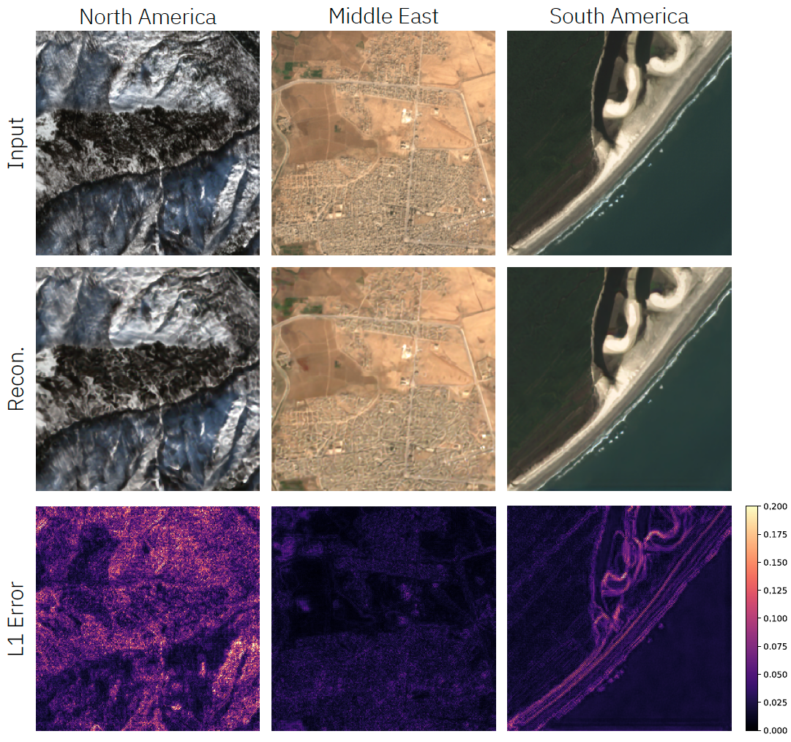
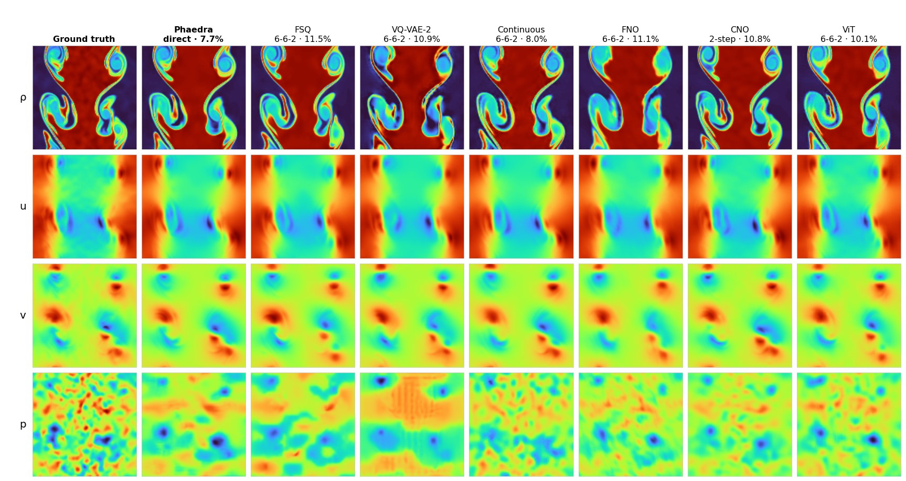

Phaedra: Learning High-Fidelity Discrete Tokenization for the Physical Sciences
Abstract
Tokens are discrete representations that allow modern deep learning to scale by transforming high-dimensional data into sequences that can be efficiently learned. As existing tokenizers are designed for realistic visual perception, we investigate whether these are optimal for scientific images, which exhibit a large dynamic range and require token embeddings to retain physical properties. We propose Phaedra, inspired by classical shape-gain quantization and proper orthogonal decomposition. We demonstrate that Phaedra consistently improves reconstruction across a range of PDE datasets and shows strong out-of-distribution generalization to unknown PDEs and real-world Earth observation data.

Phaedra consistently improves reconstruction across PDE datasets, capturing fine details and precise magnitudes critical for scientific simulation. This is achieved by splitting the embeddings into shape and gain components, allowing for high-fidelity tokenization that retains physical properties, even in out-of-distribution scenarios.
Methodology
Phaedra leverages a disentangled hierarchical representation inspired by shape-gain quantization. The tokenizer factorizes latent embeddings into two distinct components: morphology ($z_\mu$), which captures spatial structures and topological features via Finite Scalar Quantization (FSQ), and amplitude ($z_\alpha$), which preserves the dynamic range and physical magnitudes. By incorporating an approximately continuous channel for amplitude, Phaedra avoids the precision loss common in standard discrete codebooks. This architecture effectively mirrors Proper Orthogonal Decomposition (POD) by separating spatial modes from their scalar coefficients, ensuring that physical properties such as conservation laws and sharp gradients are maintained even at high compression ratios.

The Phaedra pipeline uses a single encoder to compute two sets of embeddings; the shape embeddings are quantized using sparse, high-dimensional FSQ to capture spatial structures, while the gain embeddings are passed through a dense, 1-dimensional quantizer which approximates a continuous channel, preserving physical magnitudes. Following quantization, a learned recombination operator combines these two embeddings and passes them to the decoder for the final reconstruction.
Interactive Latent Space Exploration
Use the sliders below to independently interpolate the morphology ($z_\mu$) and amplitude ($z_\alpha$) tokens between two timesteps of the Kelvin-Helmholtz (KH) instability dataset. This example illustrates the disentanglement of features via the amplitude-morphology latent representations. Interpolating between the amplitude tokens shows larger changes within the overall structure of the flow, while changing morphology tokens results in finer changes to the turbulent structures, while maintaining the same overall dynamic range. By combining the morphology of one sample with the amplitude of another, we can generate reconstructions that maintain the fine-scale turbulent structure of one sample while strictly obeying the physical dynamic range of the other. Please note, this example is only for illustrative purposes and does not represent a true interpolation in the latent space, as the model was not trained with an explicit disentanglement loss.
Active Reconstruction
PDE Reconstruction Benchmarks
All models are trained on the same set of data, comprising Compressible Euler time-series defined by 4 different classes of initial conditions and Incompressible Navier-Stokes defined by 2 different classes of initial conditions. While we present some competitive tokenizers below, a comprehensive comparison against additional baselines is detailed in the main paper. We evaluate Phaedra across three levels of difficulty.
- ID (In-Distribution): Test samples from the same PDE family and parameters as training.
- OD1 (Out-of-Distribution): Shifts in the PDE coefficients and initial conditions.
- OD2 (Out-of-Distribution): Shifts in the PDEs that define the problem.






| Model | Dataset | nMAE ↓ | nRMSE ↓ | Δσ²loc ↓ | γmin ↑ |
|---|---|---|---|---|---|
| VQ-VAE-2 | ID | 3.024 | 5.069 | 15.02 | 79.1% |
| OD1 | 2.113 | 5.854 | 21.55 | 87.5% | |
| OD2 | 4.449 | 5.833 | 17.06 | 68.9% | |
| FSQ | ID | 2.603 | 4.292 | 11.29 | 85.3% |
| OD1 | 1.876 | 4.314 | 20.55 | 93.8% | |
| OD2 | 3.831 | 4.997 | 11.65 | 68.0% | |
| Phaedra (Ours) | ID | 1.522 | 2.489 | 5.96 | 93.6% |
| OD1 | 1.217 | 2.442 | 6.47 | 98.0% | |
| OD2 | 2.500 | 3.363 | 5.82 | 79.9% |
Sentinel-2 L1C Earth Observation Data
| Group | Model | rL₁ ↓ | rL₂ ↓ | Δσ²loc ↓ | γmin ↑ |
|---|---|---|---|---|---|
| Baseline | Continuous | 7.426 | 8.100 | 62.61 | 90.02% |
| Compression: 4$\times$4 | Phaedra₄ (Ours) | 8.895 | 9.749 | 128.5 | 93.17% |
| FSQ₄ | 11.053 | 12.405 | 215.8 | 77.62% | |
| Compression: 8$\times$8 | Phaedra₈ (Ours) | 9.900 | 11.475 | 163.9 | 62.72% |
| Cosmos₈ | 16.717 | 19.245 | 19,566 | 79.70% |
Metrics calculated on native 13-band resolutions (10m, 20m, 60m).

Neural Operators on Phaedra Tokens
Tokens are only useful if models can learn on them. We train a 38M-parameter encoder–decoder transformer that maps the tokens of an initial condition, together with a lead time $t$, to the tokens at time $t$; the frozen Phaedra decoder turns the predicted tokens back into density, velocity and pressure. The same transformer is trained on FSQ and VQ-VAE-2 tokens and on the latents of a continuous autoencoder, and we compare with FNO, CNO and a ViT that work directly on the fields — every model has about 38M parameters (44M for the larger VQ-VAE-2 vocabularies) and is trained separately on three compressible Euler datasets from Poseidon: Kelvin–Helmholtz (KH), curved Riemann (RC) and Riemann–Kelvin–Helmholtz (RKH), which the tokenizer never saw during its training.
Predicted tokens and the physics decoded from them
The first test trajectory of each dataset, from $t = 0$ to the final time $t = 0.7$. From left to right:
the ground truth; the amplitude and morphology tokens predicted by the
transformer on the 32×32 token grid (morphology tokens are coloured by their FSQ code); the field
decoded from these tokens; and the absolute error, labelled with the relative $L_1$ error
of the frame. Every frame is predicted in a single step from the tokens of the initial condition; the
first frame shows the tokenized initial condition and its reconstruction. The video is rendered from the
released weights (scripts/website/render_token_video.py), and its errors are identical to
those in the evaluation below.
Accuracy at the final time
Relative $L_1$ error (%) at $t = 0.7$, averaged over $\rho, u, v, p$ and the 240 test trajectories of each dataset, ± the 95% bootstrap confidence interval. Every model is shown with its best prediction strategy (tag: d direct $0 \to t$, 2s autoregressive 2-step, 662 rollout $0 \to 0.3 \to 0.6 \to 0.7$); bold marks the best model per dataset. Phaedra tokens are the best of the discrete representations on all three datasets, with 16%, 28% and 43% lower error than FSQ tokens on KH, RC and RKH. They give the lowest error of all models on RC and RKH; on KH the ViT (9.18%) and the continuous-latent transformer (9.28%) are slightly more accurate than Phaedra (9.50%).
| Model | Input | KH | RC | RKH |
|---|---|---|---|---|
| Phaedra transformer | Phaedra tokens | 9.50 ± 0.34 d | 27.21 ± 0.71 662 | 10.23 ± 0.80 662 |
| FSQ transformer | FSQ tokens | 11.28 ± 0.34 662 | 38.05 ± 1.05 662 | 17.99 ± 1.37 662 |
| VQ-VAE-2 transformer | VQ-VAE-2 tokens | 15.14 ± 0.48 662 | 42.40 ± 0.63 d | 24.52 ± 1.15 662 |
| Continuous transformer | continuous AE latents | 9.28 ± 0.30 662 | 119.05 ± 2.96 d | 11.56 ± 0.70 662 |
| FNO | physical fields | 12.55 ± 0.36 662 | 35.63 ± 0.69 662 | 16.66 ± 0.91 662 |
| CNO | physical fields | 10.15 ± 0.32 2s | 29.92 ± 0.74 2s | 11.82 ± 0.82 662 |
| ViT | physical fields | 9.18 ± 0.27 662 | 39.68 ± 0.58 d | 13.20 ± 0.79 662 |
Per-variable errors ($\rho, u, v, p$) of all 21 models
| Model | Data | ρ | u | v | p | Average | Strategy |
|---|---|---|---|---|---|---|---|
| Phaedra | KH | 4.78 | 8.43 | 24.29 | 0.51 | 9.50 ± 0.34 | direct |
| Phaedra | RC | 20.66 | 40.73 | 40.42 | 7.02 | 27.21 ± 0.71 | 6-6-2 |
| Phaedra | RKH | 6.52 | 16.01 | 15.64 | 2.74 | 10.23 ± 0.80 | 6-6-2 |
| FSQ | KH | 5.30 | 10.91 | 28.27 | 0.62 | 11.28 ± 0.34 | 6-6-2 |
| FSQ | RC | 28.12 | 57.08 | 56.77 | 10.21 | 38.05 ± 1.05 | 6-6-2 |
| FSQ | RKH | 10.37 | 27.73 | 28.78 | 5.08 | 17.99 ± 1.37 | 6-6-2 |
| VQ-VAE-2 | KH | 7.95 | 13.90 | 38.04 | 0.68 | 15.14 ± 0.48 | 6-6-2 |
| VQ-VAE-2 | RC | 29.54 | 63.17 | 64.39 | 12.48 | 42.40 ± 0.63 | direct |
| VQ-VAE-2 | RKH | 14.73 | 38.09 | 37.29 | 7.97 | 24.52 ± 1.15 | 6-6-2 |
| Continuous | KH | 4.64 | 8.34 | 23.53 | 0.61 | 9.28 ± 0.30 | 6-6-2 |
| Continuous | RC | 77.95 | 197.31 | 156.93 | 44.00 | 119.05 ± 2.96 | direct |
| Continuous | RKH | 7.09 | 18.09 | 17.87 | 3.18 | 11.56 ± 0.70 | 6-6-2 |
| FNO | KH | 6.24 | 11.18 | 32.23 | 0.54 | 12.55 ± 0.36 | 6-6-2 |
| FNO | RC | 26.31 | 53.62 | 53.42 | 9.16 | 35.63 ± 0.69 | 6-6-2 |
| FNO | RKH | 10.08 | 26.36 | 25.67 | 4.54 | 16.66 ± 0.91 | 6-6-2 |
| CNO | KH | 5.06 | 9.10 | 25.93 | 0.51 | 10.15 ± 0.32 | 2-step |
| CNO | RC | 22.65 | 44.44 | 44.66 | 7.94 | 29.92 ± 0.74 | 2-step |
| CNO | RKH | 6.79 | 18.83 | 18.50 | 3.17 | 11.82 ± 0.82 | 6-6-2 |
| ViT | KH | 4.64 | 8.25 | 23.33 | 0.51 | 9.18 ± 0.27 | 6-6-2 |
| ViT | RC | 28.76 | 60.17 | 59.51 | 10.28 | 39.68 ± 0.58 | direct |
| ViT | RKH | 9.09 | 20.86 | 19.66 | 3.18 | 13.20 ± 0.79 | 6-6-2 |
All tables as CSV, Markdown and LaTeX: docs/results. The released RKH operators are the checkpoints evaluated in the paper: step 56k of the Phaedra transformer and epoch 59 of the continuous-latent transformer, whose training diverged afterwards.
Error over time
Relative $L_1$ error over the prediction horizon (mean over $\rho, u, v, p$ and the 240 test trajectories). The snapshots are $\Delta t = 0.05$ apart. Direct predicts every time in a single step from $t = 0$, 2-step chains predictions two snapshots ahead ($2\Delta t = 0.1$ per step, $0 \to 0.1 \to \dots \to 0.7$), and 6-6-2 rolls out $0 \to 0.3 \to 0.6 \to 0.7$. Click a model in the legend to hide it.
All models at $t = 0.7$

The tokenizer sets the floor
Decoding the ground-truth tokens of the test data gives the lowest error that any operator on a representation can reach. Phaedra's floor is 1.6–1.9× lower than that of FSQ and 2.3–2.5× lower than that of VQ-VAE-2 on the same 32×32 token grid; only the continuous autoencoder, which is not discrete, is lower. Relative $L_1$ error (%) at $t = 0.7$, mean over $\rho, u, v, p$.
| Tokenizer | KH | RC | RKH |
|---|---|---|---|
| Phaedra | 0.54 | 3.30 | 1.49 |
| FSQ | 1.01 | 5.16 | 2.36 |
| VQ-VAE-2 | 1.37 | 8.39 | 3.45 |
| Continuous AE (not discrete) | 0.27 | 1.48 | 0.65 |
Masked Autoencoding on Token Grids
Phaedra tokens also support self-supervised learning. A masked autoencoder (a transformer with about 48M parameters) sees a token grid with 75% of its tokens hidden and reconstructs them. It is pre-trained on KH, RC and RKH together and then fine-tuned on each dataset. The table gives the relative $L_1$ error (%) of the fields decoded from the reconstructed token grids, mean over $\rho, u, v, p$ (number of test trajectories in parentheses).
| Tokens | pre-trained on 3 PDEs evaluated on RKH | fine-tuned evaluated on KH | fine-tuned evaluated on RC | fine-tuned evaluated on RKH |
|---|---|---|---|---|
| Phaedra | 16.43 (10 traj.) | 4.76 (10 traj.) | 22.17 (10 traj.) | 7.27 (10 traj.) |
| FSQ | 16.91 (10 traj.) | 6.29 (1 traj.) | 28.20 (1 traj.) | 7.07 (1 traj.) |
The masks are random, so each number comes from one evaluation run. The fine-tuned FSQ models were evaluated on a single test trajectory.
Code, Models and Data
🤗 Models
safetensors, each with its training configuration. CC BY-NC 4.0.
Tokenize a field
git clone https://github.com/camlab-ethz/Phaedra.git && cd Phaedra && pip install -e .
import torch
from phaedra import load_pretrained
model = load_pretrained() # the paper's tokenizer, downloaded from Hugging Face
x = torch.randn(1, 1, 128, 128) # a field normalized per variable: (x - mean) / std
quant, _, (morph, amp), _ = model.encode(x) # morphology and amplitude tokens on the 32x32 grid
x_rec = model.decode(quant)Reproducing the operator and MAE results, training from scratch and preparing the Poseidon data are described in the README.
Conclusion & Discussion
Our findings demonstrate that Phaedra successfully closes the "fidelity gap" that typically limits discrete tokenization in scientific applications. By balancing structural discretization with magnitude preservation, the model achieves superior reconstruction across diverse PDE families and exhibits remarkable zero-shot transfer to complex Earth observation data. The higher fidelity carries over to learning on the tokens: neural operators trained on Phaedra tokens are more accurate than those trained on the other discrete tokenizers. This suggests that the shape-gain prior serves as a fundamental inductive bias for physical systems, enabling models to generalize across scales and disciplines. As we move toward larger scientific foundation models, Phaedra provides a robust framework for transforming continuous physical fields into discrete sequences without sacrificing the precision required for rigorous scientific analysis.
BibTeX
@inproceedings{lingsch2026phaedra,
title = {Phaedra: Learning High-Fidelity Discrete Tokenization for the Physical Sciences},
author = {Lingsch, Levi and Kissas, Georgios and Jakubik, Johannes and Mishra, Siddhartha},
booktitle = {Advances in Neural Information Processing Systems},
year = {2026},
eprint = {2602.03915},
archivePrefix = {arXiv},
url = {https://arxiv.org/abs/2602.03915}
}